Simulado 1
No meio do caminho
Para medir onde você está e ajustar o estudo enquanto ainda dá tempo.
30 dias após a compra

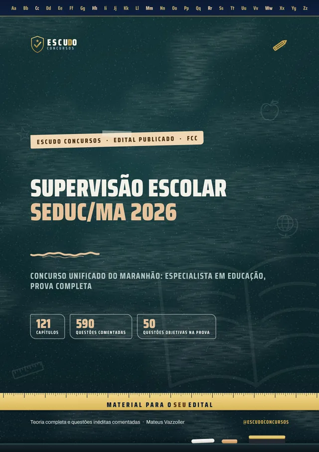
590questões
comentadas
São 170 vagas de Especialista em Educação: Supervisão Escolar na SEDUC/MA. O seu material cobre a prova inteira? Curso feito a partir do Edital nº 01/2026, item por item, com os Conhecimentos Gerais (Língua Portuguesa, Matemática e Raciocínio Lógico, Geografia e História do Maranhão e Informática), os Específicos do cargo (fundamentos da educação, atendimento socioeducativo, ECA, planejamento, currículo, avaliação, EJA, educação inclusiva, PIA, rede de proteção social e formação de educadores) e a redação de 20 a 30 linhas.
De acordo com o Edital nº 01/2026, de 17/11/2026 · FCC
de R$ 47 por 21% OFF
R$37
com o cupom SUPERVISAOMA37 até 29/01/2027. Pelo botão, o cupom já vai preenchido.
R$47
Curso completo, com acesso imediato.
Resposta rápida
A prova objetiva e a redação do Concurso Público Unificado do Maranhão são em 04/04/2027, aplicadas pela FCC (Edital nº 01/2026, de 17 de novembro de 2026). As inscrições vão de 14/12/2026 a 29/01/2027.
São 170 vagas imediatas de Especialista em Educação: Supervisão Escolar (cargo 10) na SEDUC, com vencimento de R$ 1.918,12 e jornada de 40 horas semanais. A taxa de inscrição é de R$ 120,00.
A prova objetiva tem 20 questões de Conhecimentos Gerais (peso 1) e 30 de Conhecimentos Específicos (peso 2), todas de múltipla escolha com cinco alternativas, de A a E, mais uma redação de 20 a 30 linhas. É preciso nota 6,00 para ser habilitado. O curso cobre a prova inteira, seguindo o programa publicado no edital. O curso em PDF da ESCUDO segue o edital item por item, com 121 capítulos, 590 questões comentadas, redação e 2 simulados de 50 questões, com proposta de redação, e tem 7 dias de garantia pela Hotmart.
O concurso
O Concurso Público Unificado do Maranhão (Edital nº 01/2026, de 17/11/2026, publicado em 18/11/2026, banca FCC) reúne cinco órgãos do Poder Executivo estadual: SEAD, SEDUC, IMESC, SEPLAN e STC. A SEDUC abriu 170 vagas imediatas de Especialista em Educação: Supervisão Escolar (cargo 10), com vencimento de R$ 1.918,12 e jornada de 40 horas semanais, mais 2.000 vagas de Professor em 17 áreas. O requisito é a graduação em Pedagogia.
As inscrições vão de 14/12/2026 a 29/01/2027, só pela internet, no site da FCC, com taxa de R$ 120,00. A prova objetiva e a redação são em 04/04/2027, no mesmo dia, com 4 horas de duração. Depois vem a prova de títulos, só classificatória.
A prova objetiva tem 20 questões de Conhecimentos Gerais (peso 1) e 30 de Conhecimentos Específicos (peso 2), todas de 5 alternativas, de (A) a (E). A nota da objetiva é a média ponderada das duas, e é preciso 6,00 para ser habilitado. A redação é um texto dissertativo-argumentativo de 20 a 30 linhas, também com nota mínima de 6,00.
O curso cobre a prova inteira do cargo e segue o programa publicado no Anexo V do edital. O programa de Específicos tem cara de atendimento socioeducativo (SINASE, PIA, Plano Operativo): se sair retificação, o material é atualizado.
| Parte da prova | Questões | Capítulos |
|---|---|---|
| Conhecimentos Gerais (peso 1): Língua Portuguesa, Matemática e Raciocínio Lógico, Geografia e História do Maranhão e Informática | 20 | 81 |
| Redação: texto dissertativo-argumentativo de 20 a 30 linhas | 1 texto | 2 |
| Conhecimentos Específicos (peso 2): fundamentos e função social da escola, atendimento socioeducativo, ECA, planejamento, currículo, avaliação, EJA, inclusão, PIA, rede de proteção e formação de educadores | 30 | 37 |
| Mais o capítulo 001, sobre como é a prova e como usar o curso. O edital não diz quantas questões cada disciplina tem dentro dos Gerais e dos Específicos. | 50 | 121 |
O formato
Você estuda lendo, no seu ritmo, pela área de membros da Hotmart ou com os arquivos baixados. O curso foi feito a partir do Edital nº 01/2026, item por item, na ordem do conteúdo programático, com a legislação conferida no texto vigente em 18/11/2026, a data de publicação do edital. As questões seguem o formato da prova: cinco alternativas, de (A) a (E).
Páginas reais do PDF
Toque numa página para ver em tamanho maior.
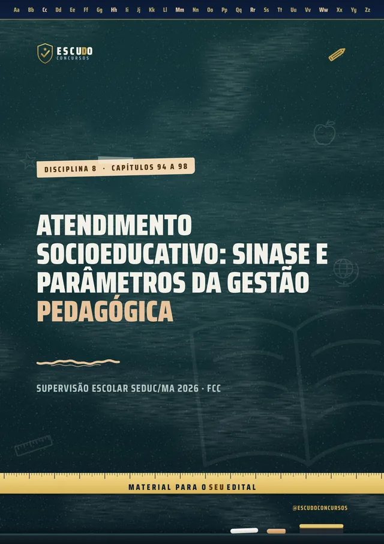
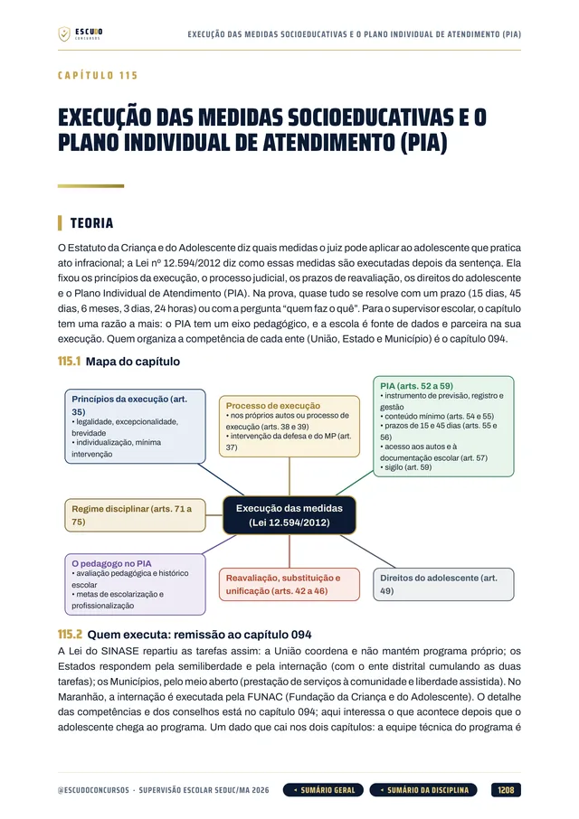
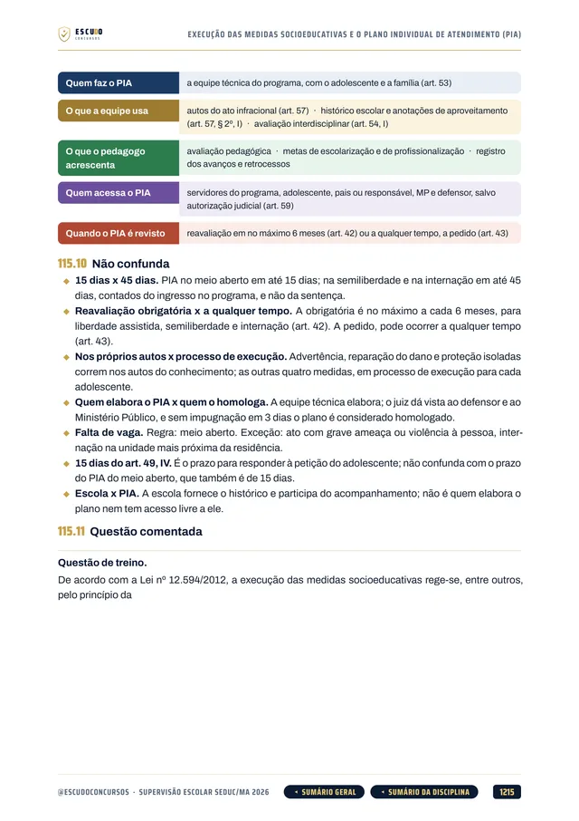
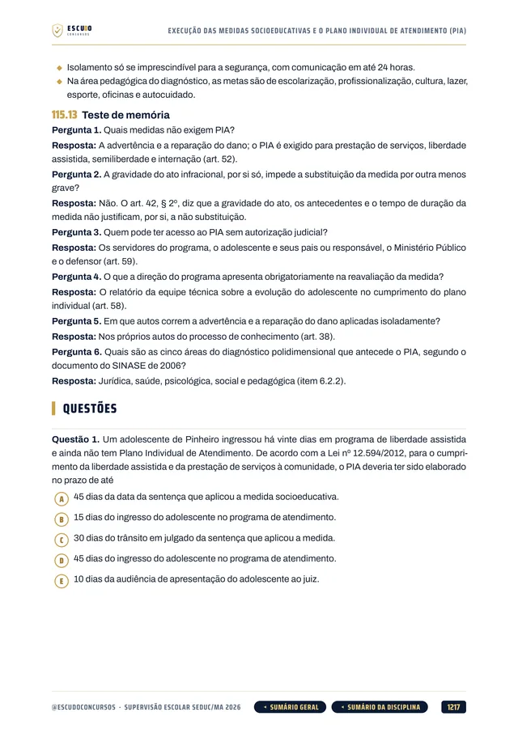
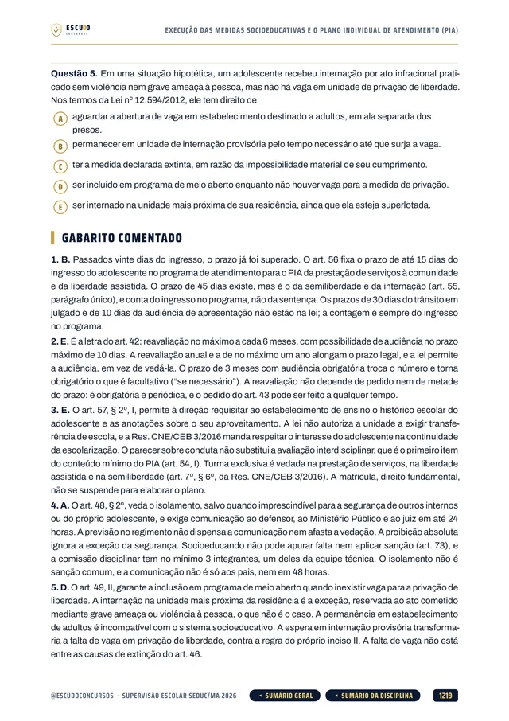
100% em PDF · Garantia de 7 dias · Pagamento pela Hotmart
O que você recebe
Curso em PDF organizado em 15 módulos pelas disciplinas do edital, com 1.292 páginas no padrão visual ESCUDO, para ler no computador, no tablet, no celular ou no app da Hotmart. Não há videoaulas.
121 capítulos da prova inteira: Língua Portuguesa (27 capítulos), Redação (2), Matemática e Raciocínio Lógico (16), Geografia e História do Maranhão (18), Noções de Informática (20) e os Específicos do cargo (37), mais o capítulo 001 sobre como é a prova.
590 questões inéditas com 5 alternativas, de (A) a (E), como na prova, todas com gabarito comentado: por que a correta está correta e onde está o erro de cada uma das outras.
Específicos em 37 capítulos: fundamentos filosóficos, sociológicos e psicológicos da educação, função social da escola e direito à educação, SINASE e parâmetros da gestão pedagógica no atendimento socioeducativo, políticas públicas e ECA, planejamento, projeto político-pedagógico, currículo, avaliação, EJA, educação inclusiva, o pedagogo, o PIA e o Plano Operativo, vulnerabilidade e rede de proteção (SUAS, CRAS e CREAS) e formação de educadores.
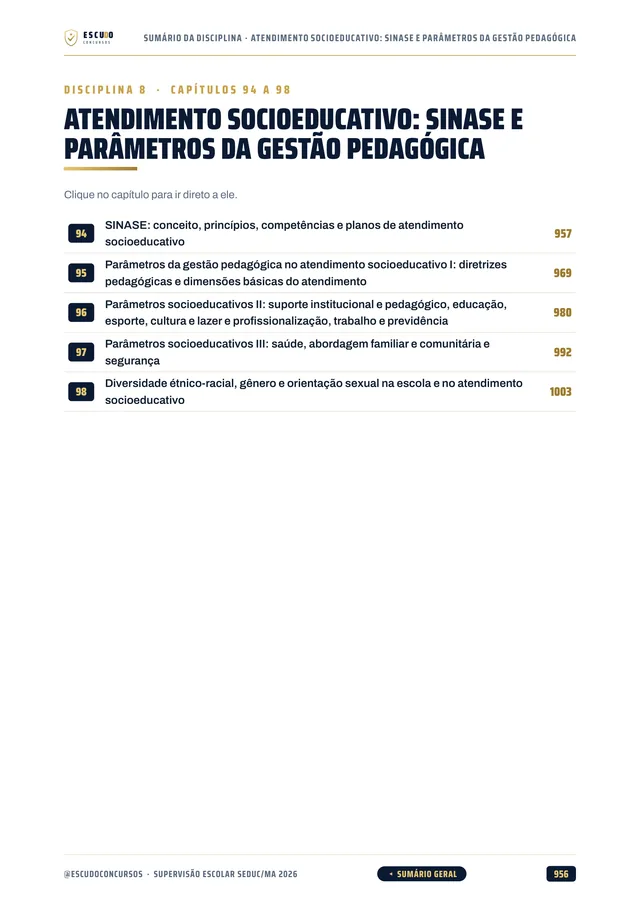
Língua Portuguesa em 27 capítulos, pelo programa da FCC: interpretação, gêneros textuais, ortografia, classes de palavras, sintaxe, concordância, regência, crase, pontuação, reescrita de frases e redação oficial.
Geografia e História do Maranhão em 18 capítulos: território, relevo, clima, hidrografia, população, economia, portos e ferrovias, povos indígenas e quilombolas, França Equinocial, Balaiada, século XX, cultura (bumba meu boi, tambor de crioula, tambor de mina e reggae) e o Maranhão de hoje.
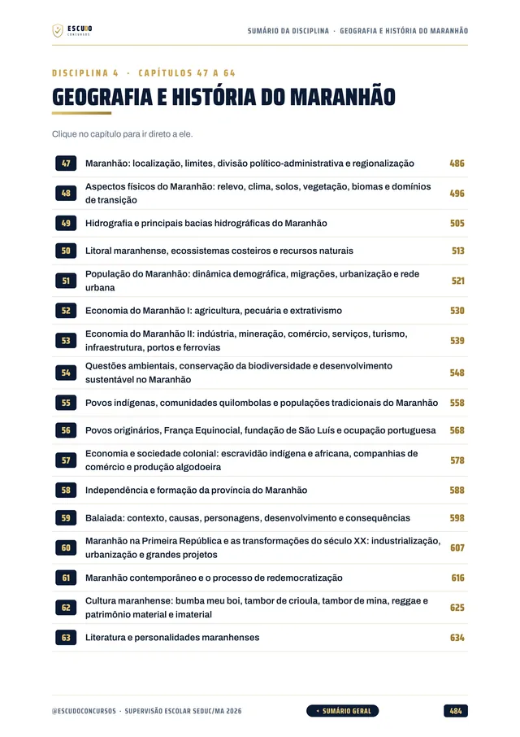
Redação em 2 capítulos: os critérios do item 10.4 do edital, o limite de 20 a 30 linhas, o projeto de texto, o recorte temático, o repertório de temas de educação e do Maranhão e propostas comentadas com redação-modelo.
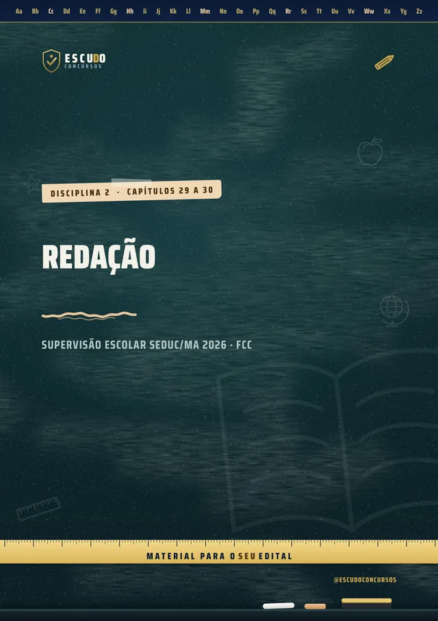
Noções de Informática em 20 capítulos: Windows, Word, Excel e PowerPoint, Google Workspace, Gmail e Outlook, Teams, Zoom e Meet, redes, segurança, inteligência artificial generativa, LGPD e governo digital. Matemática e Raciocínio Lógico em 16 capítulos: operações, frações, proporção, porcentagem, estatística, lógica, argumentação e relações arbitrárias.
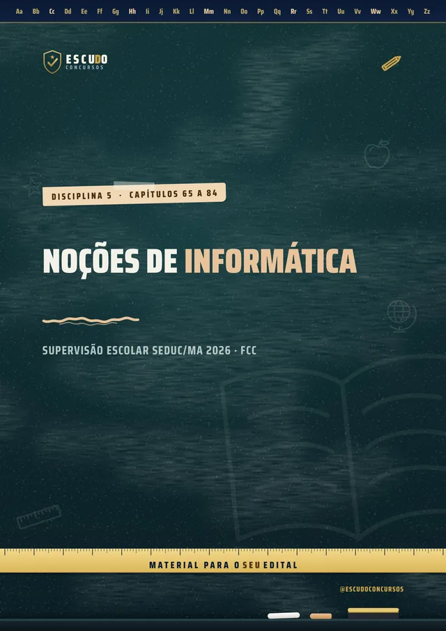
Teoria com recursos para memorizar: mapa de cada capítulo, esquemas, quadros de “pegadinha” e “não confunda”, questão comentada passo a passo, revisão relâmpago e teste de memória. Navegação clicável: do sumário você vai direto à disciplina e ao capítulo, e volta pelos botões do rodapé.
2 simulados inéditos de 50 questões (20 de Conhecimentos Gerais e 30 de Específicos, como na prova), de 5 alternativas, cada um com proposta de redação, caderno de comentários e tabela para calcular a nota como o edital. O Simulado 1 é liberado 30 dias após a compra e o Simulado 2, 60 dias após a compra.
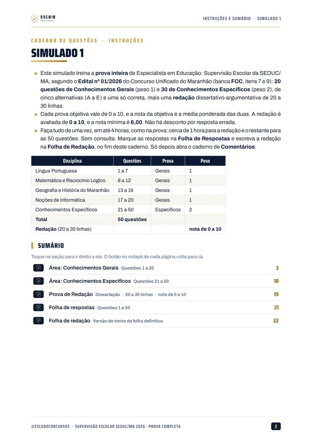
Área de membros
| Módulo | Conteúdo | Liberação |
|---|---|---|
| M0 Comece aqui | Apresentação + capítulo 001 (como é a prova e como usar o curso). Bônus: PDF completo para baixar e imprimir | Na compra; o PDF completo no 8º dia |
| M1 Língua Portuguesa | Capítulos 002 a 028 | Na compra |
| M2 Redação | Capítulos 029 e 030 | Na compra |
| M3 Matemática e Raciocínio Lógico | Capítulos 031 a 046 | Na compra |
| M4 Geografia e História do Maranhão | Capítulos 047 a 064 | Na compra |
| M5 Noções de Informática | Capítulos 065 a 084 | Na compra |
| M6 Fundamentos da Educação | Capítulos 085 a 091 | Na compra |
| M7 Função Social da Escola e Direito à Educação | Capítulos 092 e 093 | Na compra |
| M8 SINASE e Gestão Pedagógica Socioeducativa | Capítulos 094 a 098 | Na compra |
| M9 Políticas Públicas e ECA | Capítulos 099 a 102 | Na compra |
| M10 Planejamento, Currículo e Avaliação | Capítulos 103 a 109 | Na compra |
| M11 EJA e Educação Inclusiva | Capítulos 110 a 113 | Na compra |
| M12 O Pedagogo, o PIA e o Plano Operativo | Capítulos 114 a 116 | Na compra |
| M13 Vulnerabilidade e Rede de Proteção Social | Capítulos 117 a 120 | Na compra |
| M14 Processo Formativo de Educadores | Capítulo 121 | Na compra |
| M15 Simulado 1 | 50 questões, proposta de redação e caderno de comentários | 30 dias após a compra |
| M16 Simulado 2 | 50 questões, proposta de redação e caderno de comentários | 60 dias após a compra |
Treino no formato da prova
Cada simulado tem 50 questões, como a prova real: 20 de Conhecimentos Gerais (Língua Portuguesa 7, Matemática e Raciocínio Lógico 5, Geografia e História do Maranhão 4 e Informática 4) e 30 de Conhecimentos Específicos, de 5 alternativas, mais uma proposta de redação de 20 a 30 linhas, com caderno de comentários e tabela para calcular a nota como o edital (Gerais com peso 1 e Específicos com peso 2).
Simulado 1
Para medir onde você está e ajustar o estudo enquanto ainda dá tempo.
30 dias após a compra
Simulado 2
Liberado a tempo do último teste antes da prova de 04/04/2027.
60 dias após a compra
Para quem é
Para quem vai prestar Especialista em Educação: Supervisão Escolar da SEDUC/MA no Concurso Unificado do Maranhão e quer estudar Gerais, Específicos e redação num só curso.
Você tem 7 dias de garantia pela Hotmart. Se não for o que você esperava, pede o reembolso pela própria Hotmart, dentro do prazo.
Sem surpresa na área de membros
Na compra: todas as disciplinas em PDF, uma por módulo, com a teoria e as questões comentadas. É o curso inteiro, para começar a estudar no mesmo dia.
8 dias após a compra: o PDF completo para imprimir. É o mesmo conteúdo dos módulos num arquivo só, liberado depois da garantia de 7 dias.
Simulado 1: 30 dias após a compra, para medir onde você está no meio da preparação.
Simulado 2: 60 dias após a compra, a tempo do último teste antes da prova de 04/04/2027.
O PDF completo e os simulados aparecem bloqueados na área de membros até a data de cada um: não é conteúdo faltando, é a liberação programada.
Dúvidas
Não. É um curso 100% em PDF: teoria, questões comentadas e simulados para ler e resolver.
Sim. Ele segue o programa publicado no Anexo V do edital para a Supervisão Escolar: fundamentos da educação, função social da escola, atendimento socioeducativo (SINASE, PIA e Plano Operativo), ECA, planejamento, currículo, avaliação, EJA, educação inclusiva, rede de proteção social e formação de educadores.
Pode. Ele tem cara de atendimento socioeducativo, e não de supervisão escolar clássica, e pode sair retificação. O curso segue o programa publicado em 18/11/2026 e será atualizado se houver retificação. Acompanhe o site da FCC.
O acesso é imediato depois da confirmação do pagamento, pela área de membros da Hotmart (web ou app). O PDF completo para baixar e imprimir é liberado no 8º dia.
O Simulado 1 é liberado 30 dias após a compra e o Simulado 2, 60 dias após a compra.
O edital não informa: diz só que são 20 questões de Conhecimentos Gerais e 30 de Específicos. Por isso o curso cobre o programa inteiro, com profundidade proporcional ao tamanho de cada item.
A objetiva tem 20 questões de Conhecimentos Gerais (peso 1) e 30 de Conhecimentos Específicos (peso 2), todas de múltipla escolha com cinco alternativas, de (A) a (E), e uma só correta. A nota da objetiva é a média ponderada, e é preciso 6,00 para ser habilitado. A redação, de 20 a 30 linhas, é aplicada no mesmo dia. As questões do curso seguem esse formato.
Não é o indicado. A prova de Professor tem Específicos de cada área. Existe um curso próprio de Professor, com os Conhecimentos Gerais e a Redação, que são os mesmos desta prova.
Não. As 590 questões de treino e as dos simulados são inéditas, escritas no formato do edital a partir do conteúdo programático.
Você tem 7 dias de garantia pela Hotmart. Se não for o que você esperava, pede o reembolso.
SEDUC/MA 2026 · Supervisão Escolar · prova completa
de R$ 47 por 21% OFF
R$37
com o cupom SUPERVISAOMA37 até 29/01/2027.
R$47
Curso completo, com acesso imediato.
Material para o SEU edital. ESCUDO Concursos.
Continue estudando
 Professor de Língua Portuguesa SEDUC/MA 2026 · FCCProfessor de Língua Portuguesa da SEDUC/MA: a prova completa
Professor de Língua Portuguesa SEDUC/MA 2026 · FCCProfessor de Língua Portuguesa da SEDUC/MA: a prova completa Professor de Matemática SEDUC/MA 2026 · FCCProfessor de Matemática da SEDUC/MA: prova completa
Professor de Matemática SEDUC/MA 2026 · FCCProfessor de Matemática da SEDUC/MA: prova completa Professor SEDUC/MA 2026 · FCCProfessor da SEDUC/MA: Conhecimentos Gerais e Redação
Professor SEDUC/MA 2026 · FCCProfessor da SEDUC/MA: Conhecimentos Gerais e Redação SEAD/MA 2026 · FCCAssistente Técnico da SEAD/MA, Administração
SEAD/MA 2026 · FCCAssistente Técnico da SEAD/MA, Administração